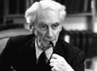

Beyaz saçları ve aristokrat görünümü ile Bertrand Russell (1872–1970) 20. yy’ın en tanınan filozofları arasında yer almaktadır. Verimli bir yazar olan Russell aynı zamanda politik bir şahsiyetti. Savaş karşıtı çalışmaları nedeniyle iki kez hapse girmiştir. Düşüncelerinin temelinde şiddet karşıtlığı ve insan acılarından tiksinme vardı.

Güçlü bir İngiliz ailesinden gelen Russell, 1931 yılında kont unvanı aldı. Ebeveynleri genç öldüler. Daha ziyade büyük annesi Lady Russell tarafından yetiştirildi. Yalnız bir çocukluğun ardından on sekiz yaşında Cambridge’e gitti.
Russell ismini ilk olarak bir matematikçi olarak duyurdu. 1903 yılında The Principles of Mathematics (Matematiğin Prensipleri) isimli çalışmasını yayınladı. İkinci kitabı Principia Mathematica’yı yazmak onu çok yormuştu. Buna rağmen akademik kariyerine devam etti.
I. Dünya Savaşı’nın başlamasının ardından Russell’in ilgisi politika ve felsefeye kaydı. Önde gelen savaş karşıtlarından biriydi. Pasifizmi yaygınlaştırmak için gösterdiği çabalardan ötürü altı ay hapse mahkum edildi. Savaştan sonra Sovyetler Birliği’ni gezdi. Komünizm onu ürkütmüştü. Daha sonra “Komünizmi anti demokratik olduğu, kapitalizmi de insanları sömürdüğü için sevmiyorum,” diyecekti.
Russell’in çalkantılı bir özel hayatı vardı. Dört kez evlenmiş ve sayısız ilişkisi olmuştu. 1940 yılında adı bir skandala karıştı. New York City Koleji’ne profesör olarak atanması dini liderlerin protestosu nedeniyle feshedildi. Bu durum Russell’i fazlasıyla kırmış ve ABD ile ilgili olumsuz fikirler edinmesine neden olmuştu.
1950’lerde artık yaşlı bir öğretmen olan Russell nükleer karşıtı harekete katıldı. İngiltere’nin nükleer silahlarını protesto ederken tutuklandı ve yedi gün boyunca I. Dünya Savaşı sırasında kaldığı aynı hapishanede yattı. 1960’lar boyunca Amerikan dış politikası ve Vietnam Savaşı’nın sıkı bir muhalifi oldu.
Russell felsefi ve matematiksel çalışmalarına ek olarak popüler düz yazıları ile de tanındı. Bunların arasında The History of Western Philosophy (Batı Felsefe Tarihi / 1945) ve 1960’larda yazdığı üç ciltlik kendi otobiyografisi de vardır. Doksan yedi yaşında Galler’de öldü.
Ek Bilgiler
1- Russell sürekli kitaplar, mektuplar ve denemeler yazdı. Bir biyografi yazarının tahminine göre günde ortalama 2 bin kelime yazıyordu. Yaklaşık her otuz saatte bir dostlarına ve tanıdıklarına mektuplar yolluyordu.
2- Büyük babası John Russell (1792–1878) iki dönem başbakanlık yaptı. İngiltere tarihindeki önemli 1832 Reformu’nun hazırlanmasından sorumluydu. Bu reform, Avam Kamarası’nı daha demokratik bir kurum haline getirmişti.
3- Bertrand Russell, Alys Smith’le olan ilk evliliğinin bitişini şöyle anlatır: “Bir öğleden sonra bisiklete bindim. Bir köy yolunda ilerlerken fark ettim ki artık Alys’i sevmiyordum.”